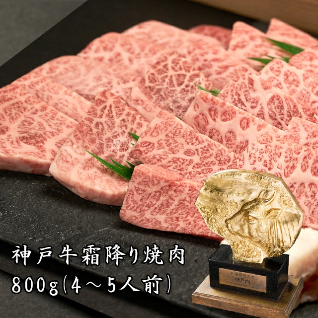
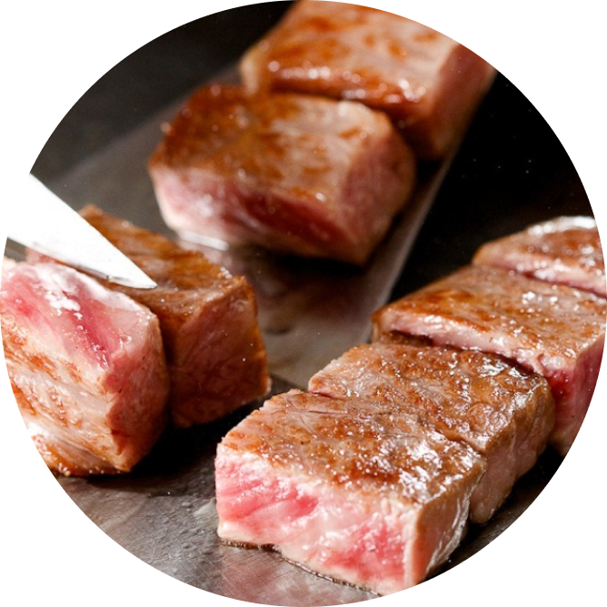

擔心今天晚上吃不好?
別擔心 我們有

霜降
上肩肉
赤身
簡單的吃法 就能享受最大的幸福
只需要鹽和胡椒
就能真正體驗脂肪的美味！
為什麼選擇神戶牛
評分為A4以上的牛肉才能被列為「神戶牛」!
日本和牛達重後，會根據「步留等級」和「肉質等級」來分級。
步留等級：是衡量牛肉產肉率的指標，分為A、B、C 三個等級，以 A 級為上等。
肉質等級：是衡量牛肉品質的指標，根據「霜降度」、「肉的色澤」、「肉的硬度與結構」、「脂肪色澤與質量」這四項，將牛肉分為 1~5 個等級，以 5 級為上等。
神戶牛在日本牛肉市場僅佔0.06%
日本和牛達重後，會根據「步留等級」和「肉質等級」來分級。
步留等級：是衡量牛肉產肉率的指標，分為A、B、C 三個等級，以 A 級為上等。
肉質等級：是衡量牛肉品質的指標，根據「霜降度」、「肉的色澤」、「肉的硬度與結構」、「脂肪色澤與質量」這四項，將牛肉分為 1~5 個等級，以 5 級為上等。
與優秀的和牛養殖農場合作
確保只提供最頂級的品種
選擇我們
穩定的和牛品質

六面燒料理方式
客人至上的服務品質